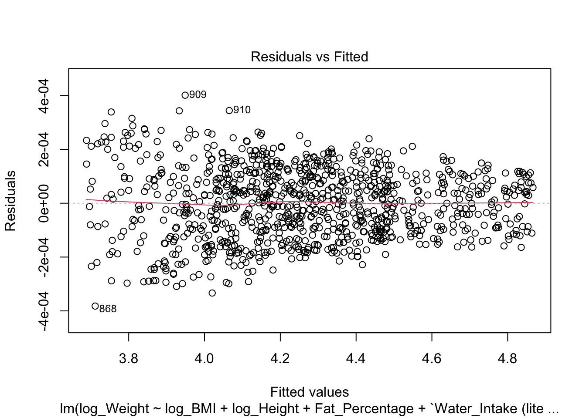
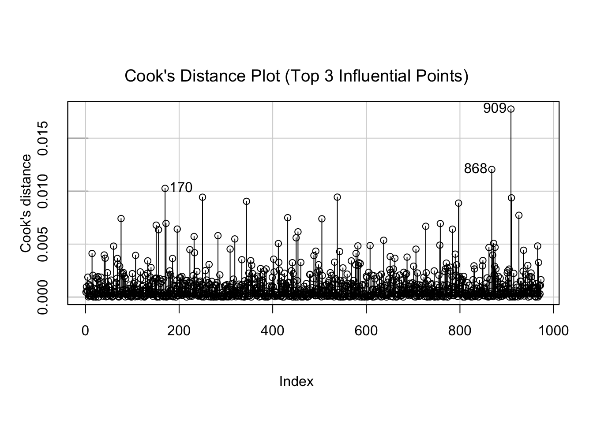
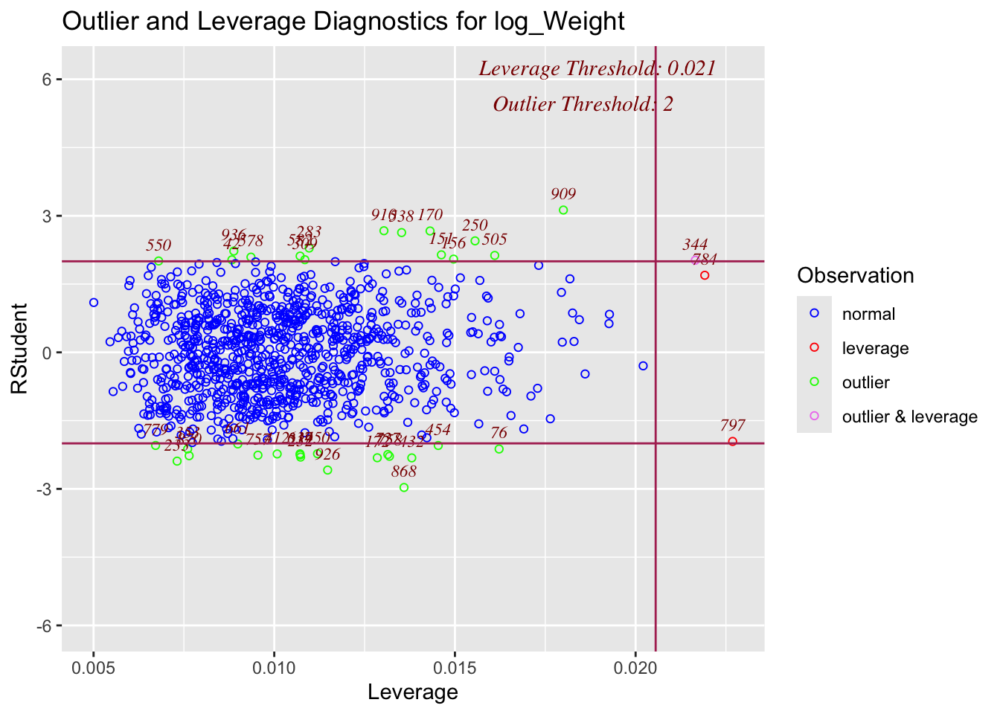
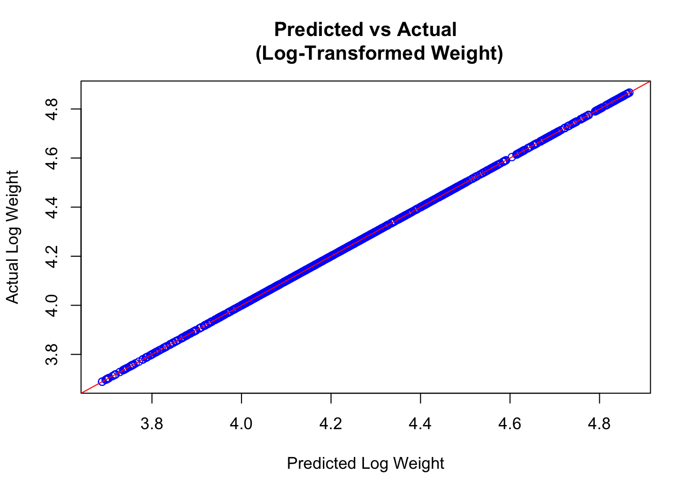

This project built and refined a multiple regression model to understand how factors such as BMI, height, body composition, water intake, workout habits, and demographics influence weight. We applied log transformations, evaluated model assumptions, tested for multicollinearity, interactions, and misspecification, and validated the model through bootstrapping and cross-validation to identify the best-fitting and most reliable specification.
Rows: 973 Columns: 15
── Column specification ────────────────────────────────────────────────────────
Delimiter: ","
chr (2): Gender, Workout_Type
dbl (13): Age, Weight (kg), Height (m), Max_BPM, Avg_BPM, Resting_BPM, Sessi...
ℹ Use `spec()` to retrieve the full column specification for this data.
ℹ Specify the column types or set `show_col_types = FALSE` to quiet this message.
data = gym_members_exercise_tracking
Model Building
Basic Multiple Regression Model
model <-lm(`Weight (kg)`~ BMI +`Height (m)`+ Fat_Percentage +`Water_Intake (liters)`+`Session_Duration (hours)`+ Gender + Workout_Type, data = gym_members_exercise_tracking)plot(model)
Based on the tests run so far, the candidate model accounts for the necessary transformations required on the response and the predictors. With this candidate model, we are trying to find if there is a positive linear relationship between the response variable of weight and the 7 predictors (BMI, height, fat percentage, water intake, session duraction, gender, and workout type). This model is ideally able to take in the appropriately transformed variables and find if in fact there is such positive linear relationship as well as investigate other questions such as if there is multicollinearity between the factor variables and if certain predictors affect weight more than others. The above model is therefore the ideal candidate model to answer such questions.
Residual Plot Transformed Model
plot(model_log, which =1)

Residual Plot is randomly scattered around 0, indicating a good plot. Compared to the untransformed data, the residuals of the candidate model appear much more evenly distributed around the horizontal line at 0. However, the only area of concern is that there appears to be a slight narrowing of the residuals as the fitted values increase, hinting that there may be larger variances for smaller values.
QQ Plot
library(car)
Loading required package: carData
qqPlot(model_log)
[1] 868 909
outlierTest(model_log)
No Studentized residuals with Bonferroni p < 0.05
Largest |rstudent|:
rstudent unadjusted p-value Bonferroni p
909 3.126248 0.0018237 NA
QQ Plot follows a straight line in general, indicating a normal distribution. However, 868 and 909 appear to be outliers. However, checking with a Bonferroni outlier test shows that these are not significant outliers.
Jarque Bera Test
library(tseries)
Registered S3 method overwritten by 'quantmod':
method from
as.zoo.data.frame zoo
# Jarque Bera Test for Untransformed Modeljarque.bera.test(model$residuals)
Jarque Bera Test
data: model$residuals
X-squared = 187.81, df = 2, p-value < 2.2e-16
# Jarque Bera Test for Candidate Modeljarque.bera.test(model_log$residuals)
Jarque Bera Test
data: model_log$residuals
X-squared = 10.91, df = 2, p-value = 0.004274
Using the residual plot for the candidate model, the qq-plot, and the Jarque Bera test, we see that there is no need for further transformations on the candidate model. While the Jarque Bera test p-value is rather low, the p-value for the transformed model is much larger than that of the untransformed model, and furthermore, based on the residual plot we may conclude that there is ultimately no need for further transformation as the scatter is overall random around the horizontal line at 0, indicating a more normal distribution.
Cook’s Distance Plot
library(car)influenceIndexPlot(model_log, id=list(n=3), vars ="Cook", main ="Cook's Distance Plot (Top 3 Influential Points)")

The Cook’s Distance Plot also identifies the same infuential points as the QQ Plot, 868 and 909 as well as point 170.
Outlier and Leverage Diagnostics
library(olsrr)
Attaching package: 'olsrr'
The following object is masked from 'package:datasets':
rivers
ols_plot_resid_lev(model_log)

Considering the transformed residual plot, qq plot, Cook’s distance plot, and the Outlier and Leverage Diagnostics, while there are outliers such as points 868, 909, and 170, they would not need to be removed. In the qqplot the outliers outlined are within the 95% confidence interval in addition to the Bonferroni outlier test which demonstrated that these outliers were not significant. Furthermore, as the residual plot of the candidate model is fairly scattered, suggesting that the model assumptions are upheld, the inclusion of the outliers does not appear to distort the overall randomness of the residuals. Therefore, it is reasonable to retain the outliers in this analysis.
AIC for Model Selection
library(broom)library(POE5Rdata)
Attaching package: 'POE5Rdata'
The following object is masked from 'package:datasets':
euro
A Lower AIC and BIC Indicate a better fit compared to the original model.
predicted_log_weight <-predict(model_log, gym_members_exercise_tracking)actual_log_weight <- gym_members_exercise_tracking$log_Weightplot(predicted_log_weight, actual_log_weight, main ="Predicted vs Actual (Log-Transformed Weight)",xlab ="Predicted Log Weight", ylab ="Actual Log Weight", col ="blue")abline(0, 1, col ="red")

Also by visualizing the data we can see that the transformed model does a good job. I tested for multicollinearity by using the VIF method, and based on the threshold of 4, we do not need to remove any of the variables. Furthermore, comparing the AIC and BIC values for the untransformed data to the transformed candidate model, the canidate model seems to have a much better fit as AIC and BIC value is far smaller. Finally, we compared our candidate model to the actual data which was fairly aligned indicating that the model is a good fit of the data.
Model Misspecification Ramsey Reset
library(car)library(POE5Rdata)library(lmtest)
Loading required package: zoo
Attaching package: 'zoo'
The following objects are masked from 'package:base':
as.Date, as.Date.numeric
reset_test <-resettest(model_log, power =2:3, type ="fitted")print(reset_test)
By running the RESET test, we see that the P-Value of 0.3112 is large enough at the 95% confidence level to fail to reject the null, so a nonlinear term is not needed. This indicates that there is no strong evidence to suggest that important unobserved variables are omitted from the model. Moreover, this implies that the candidate model is likely appropriate for understanding the relationship between the response variable, weight,and the predictor variables.
Test for Interaction Terms
library(POE5Rdata)library(effects)
lattice theme set by effectsTheme()
See ?effectsTheme for details.
model_log1 <-lm(log_Weight~log_BMI+log_Height+Fat_Percentage+`Water_Intake (liters)`+`Session_Duration (hours)`+`Gender`+`Workout_Type`+ log_BMI:log_Height, data = gym_members_exercise_tracking)model_log2 <-lm(log_Weight~log_BMI+log_Height+Fat_Percentage+`Water_Intake (liters)`+`Session_Duration (hours)`+`Gender`+`Workout_Type`+ log_Height:Fat_Percentage, data = gym_members_exercise_tracking)model_log3 <-lm(log_Weight~log_BMI+log_Height+Fat_Percentage+`Water_Intake (liters)`+`Session_Duration (hours)`+`Gender`+`Workout_Type`+`Water_Intake (liters)`:Fat_Percentage, data = gym_members_exercise_tracking)model_log4 <-lm(log_Weight~log_BMI+log_Height+Fat_Percentage+`Water_Intake (liters)`+`Session_Duration (hours)`+`Gender`+`Workout_Type`+`Gender`:`Workout_Type` , data = gym_members_exercise_tracking)summary(model_log1)
Using the p-value of coefficients, we see that the model is not statistically significant among the interaction terms, so we won’t need to include them.
Bootstrapping Log Transformed Model with Interaction Variable
library(boot)
Attaching package: 'boot'
The following object is masked from 'package:POE5Rdata':
tuna
The following object is masked from 'package:car':
logit
colnames(boot_results$t) <-names(coef(lm(log_Weight ~ log_BMI * Fat_Percentage + log_Height +`Water_Intake (liters)`+`Session_Duration (hours)`, data = gym_members_exercise_tracking)))interaction_coefficients <- boot_results$t[, "log_BMI:Fat_Percentage"]hist(interaction_coefficients, main ="Bootstrap Distribution of log_BMI:Fat_Percentage Interaction Coefficient", xlab ="Interaction Coefficient (log_BMI:Fat_Percentage)", col ="lightblue", border ="black", breaks =30)
The Histogram looks fairly symmetric and normally distributed. Based on this histogram, the sampling distribution of the predictors are overall approximately normal, which suggests that the inference methods relying on normality may still be reasonably robust.
Cross Validation
if (!require(caret)) install.packages("caret")
Loading required package: caret
Loading required package: lattice
Attaching package: 'lattice'
The following object is masked from 'package:boot':
melanoma
Linear Regression
973 samples
5 predictor
No pre-processing
Resampling: Cross-Validated (10 fold)
Summary of sample sizes: 875, 874, 876, 876, 876, 876, ...
Resampling results:
RMSE Rsquared MAE
0.0001299402 0.9999998 0.0001083176
Tuning parameter 'intercept' was held constant at a value of TRUE
RMSE of 0.0001299402 suggests that the model’s predictions of log_Weight deviate only slightly from the observed values. An R-squared value of 0.9999998 means that nearly all the variability in log_Weight is explained by the predictors, including the interaction term. A MAE of 0.0001083176 is very close to zero, further confirming the model’s strong predictive power.
Check for Overfitting since R-squared value is so high
The slightly lower RMSE on the test set (0.0001237238) suggests that the model generalizes very well to unseen data and does not overfit. The identical R² values for both the training and test sets suggest that the model performs equally well on unseen data as it does on the data it was trained on, confirming no signs of overfitting.
Favorite Specification
In our analysis, using the Jarque Bera test, the qq plot, and the residual plot of the candidate model, we found that there is no need for further transformations on our model. Based on the Cook’s Distance plot, the Outlier and Leverage Diagnostic plot, with inferences from the residual plot, we noted that while there are outliers in our model, they do not need to be removed. Using the AIC and BIC model, along with the VIF method, we tested for multicollinearity and noted that no variables needed to be removed. To test model misspecification, we ran the RESET test and as the p-value was not statistically significant, we concluded that nonlinear terms were not needed in the model. We additionally tested interactions between variables and found that there were no significant interactions to include amongst the ones tested. Finally, using the boostrap method, the resulting histogram was overall normally distributed resulting in a reasonable amount of robustness. A preferred form of analysis was the RESET test, as it’s p-value indicated whether nonlinear terms were needed in the model, and furthermore if there were any unobserved omitted variables (which may have been the cause if the p-value was below 0.05). This test incorporates our understanding of the p-value to test specific characteristics on the model and encourage changes such as a quardratic variable or to think further about unobserved variables when the p-value is significant.
Upon building and testing our model through various forms of analysis, we may now use it to help answer some of our motivating questions. Using the estimated values shown in the above summary of our model, we are able to observe whether there is a linear relationship between our reponse variable weight, and each of the seven predictors. We notice that BMI and Height have a positive linear relationship with weight therefore the marginal effect from an increase in either of these variables will have an increase in weight as well. This may be due to the fact that BMI and Height have a direct relationship with weight as BMI times Height (m)^2 is equal to weight, indicating a direct positive relationship. BMI and Height therefore seem to have a stronger relationship to weight, which is further assured by AIC and BIC models in which the preferred model included only BMI and Height. Additionally, from our model, we observe that Water Intake (liters), Strength Workouts and Yoga Workout, have a positive linear relationship with weight (based on their marginal effects), suggesting that increased water intake, a higher frequency of strength and yoga workouts may be associated with higher weight when considered marginally. Fat percentage, gender (male), Session duration, and HIIT Workout have negative marginal effects in relation to weight. This suggests that these variables are associated with reductions in weight when considered marginally.